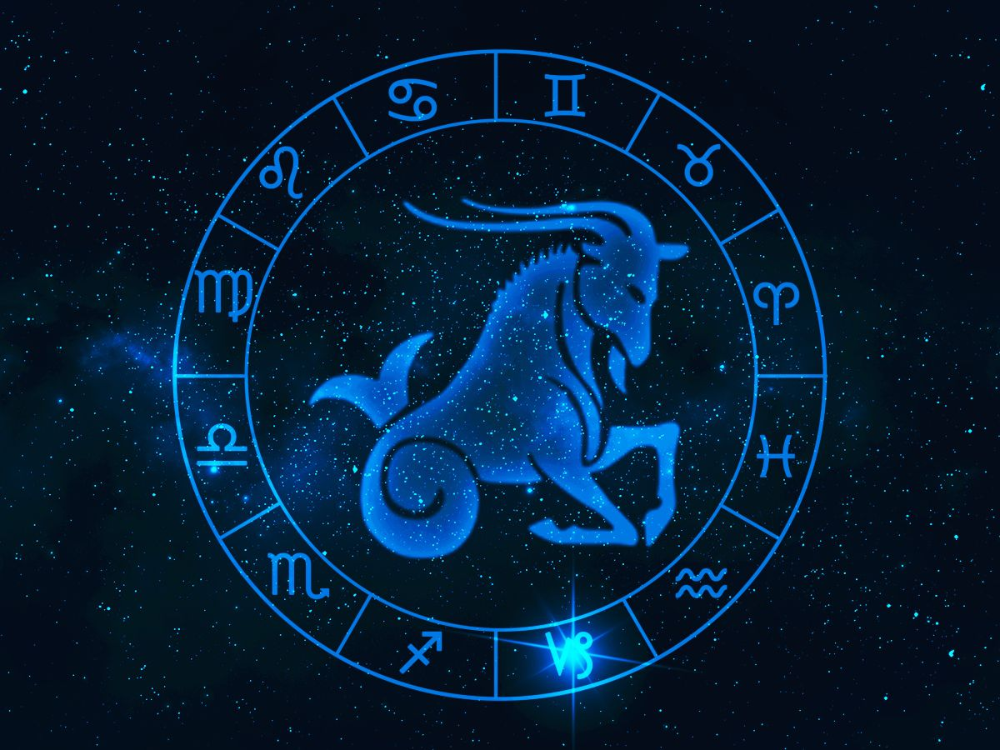

♑ Capricornio
Elemento: Tierra 🌱
Color: Morado / Lila
Emoji: 🐐
Perseverante y un poco perfeccionista… pero con chispa y sentido del humor 😎. Me gusta organizar, planear y cumplir metas, aunque también disfruto mis momentos espontáneos.
Horóscopo de hoy / estilo creativo: Tu creatividad estará al máximo hoy: es hora de probar algo nuevo en tus proyectos o en la cancha 🏐✨. Confía en tu intuición y no tengas miedo de arriesgarte, aunque sea solo para divertirte.
Compatibilidad divertida: Compatible con personas que respeten tu espacio pero también te hagan reír 😄. Evita gente demasiado caótica… a menos que te guste un poquito de adrenalina 😏.
Frase motivadora: “Paso a paso, pero siempre con estilo.”
